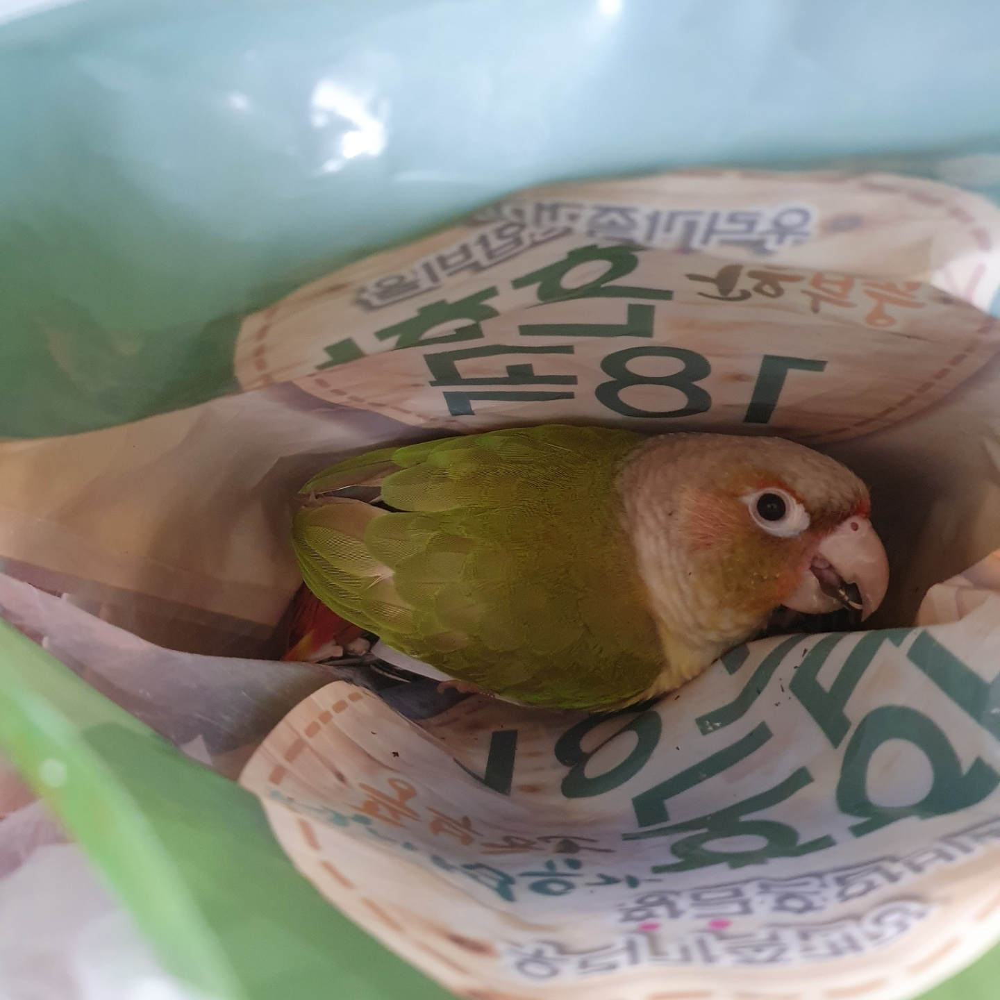

포브스 선정 세상에서 제일 말안듣는 앵무새 두 마리
천둥이
태풍이
천둥이와 태풍
김천둥

천둥이는 장난꾸러기와 같은 면모를 가지고 있다. 천둥 태풍 모두 해바라기 씨를 매우 좋아하는데, 위 사진은
해바라기 씨 자루에서 몰래 훔쳐먹다가 나에게 들킨 장면이다. 해바라기씨를 물고 흘끔 쳐다보는 것이 아주 얄밉기 짝이 없다.
특이점은 조류면서 곱슬이라는 점이다. 태풍이와 같이 있으면 곱슬이라는 것이 확연히 두드러진다.